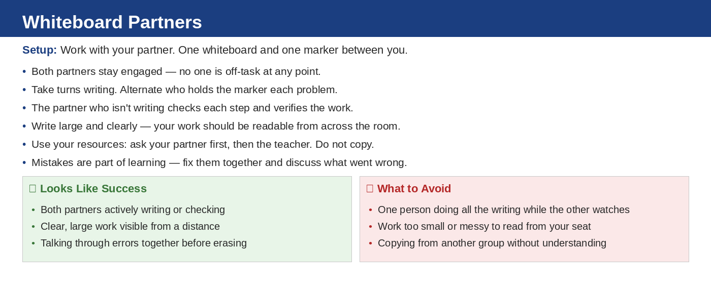
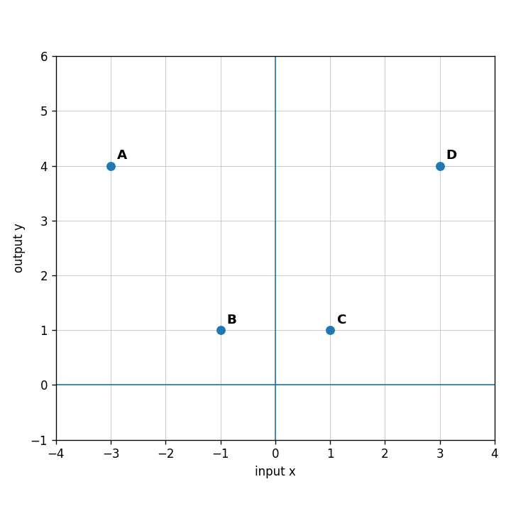

Unit 1 · Section 2 · Activity 2
Whiteboard Partners
Inputs, Outputs, and Functions

Unit 1.2 · Activity 2 · Whiteboard PartnersProblem 1
Problem 1
Read a graph
Use Graph A. What is the output when the input is $-3$? What is the output when the input is $1$?

Unit 1.2 · Activity 2 · Whiteboard PartnersSolution 1
Solution 1
Read a graph
Use Graph A. What is the output when the input is $-3$? What is the output when the input is $1$?
Solution: When the input is $-3$, the output is $4$. When the input is $1$, the output is $1$.
Unit 1.2 · Activity 2 · Whiteboard PartnersProblem 2
Problem 2
Function or not from graph
Use Graph B. Is the relation a function? Explain using repeated inputs or the vertical-line idea.
Unit 1.2 · Activity 2 · Whiteboard PartnersSolution 2
Solution 2
Function or not from graph
Use Graph B. Is the relation a function? Explain using repeated inputs or the vertical-line idea.
Solution: This relation is not a function because the input $0$ has two different outputs, $3$ and $-2$. A vertical line at $x=0$ hits two points.
Unit 1.2 · Activity 2 · Whiteboard PartnersProblem 3
Problem 3
Connect table and function rule
A function has rule $h(x)=2x-5$. A teammate starts the table below. Find the error, correct it, and explain how you know.
| $x$ | $-1$ | $0$ | $2$ | $4$ |
|---|---|---|---|---|
| $h(x)$ | $-7$ | $-5$ | $-1$ | $4$ |
Unit 1.2 · Activity 2 · Whiteboard PartnersSolution 3
Solution 3
Connect table and function rule
A function has rule $h(x)=2x-5$. A teammate starts the table below. Find the error, correct it, and explain how you know.
| $x$ | $-1$ | $0$ | $2$ | $4$ |
|---|---|---|---|---|
| $h(x)$ | $-7$ | $-5$ | $-1$ | $4$ |
Solution: The error is the value for $x=4$. Since $h(4)=2(4)-5=8-5=3$, the correct output is $3$, not $4$.
Unit 1.2 · Activity 2 · Whiteboard PartnersProblem 4
Problem 4
Design a machine
Design two different function machines that both give an output of $10$ when the input is $3$. Then test both machines with input $5$ and explain why the machines are not the same function.
Unit 1.2 · Activity 2 · Whiteboard PartnersSolution 4
Solution 4
Design a machine
Design two different function machines that both give an output of $10$ when the input is $3$. Then test both machines with input $5$ and explain why the machines are not the same function.
Solution: Answers vary. Example: Machine 1: multiply by $2$, then add $4$, so $f(x)=2x+4$. Machine 2: multiply by $3$, then add $1$, so $g(x)=3x+1$. Both give $10$ when $x=3$. For input $5$, $f(5)=14$ and $g(5)=16$, so they are not the same function.
Unit 1.2 · Activity 2 · Whiteboard PartnersProblem 5
Problem 5
Order of operations
Evaluate: $$30-6(2+1)$$
Unit 1.2 · Activity 2 · Whiteboard PartnersSolution 5
Solution 5
Order of operations
Evaluate: $$30-6(2+1)$$
Solution: $$30-6(2+1)=30-6(3)=30-18=12$$
Unit 1.2 · Activity 2 · Whiteboard PartnersProblem 6
Problem 6
Substitution
Evaluate $5q+2$ when $q=-3$.
Unit 1.2 · Activity 2 · Whiteboard PartnersSolution 6
Solution 6
Substitution
Evaluate $5q+2$ when $q=-3$.
Solution: $$5q+2=5(-3)+2=-15+2=-13$$
Unit 1.2 · Activity 2 · Whiteboard PartnersProblem 7
Problem 7
Exponents
Evaluate: $$2(5^2)-3^3$$
Unit 1.2 · Activity 2 · Whiteboard PartnersSolution 7
Solution 7
Exponents
Evaluate: $$2(5^2)-3^3$$
Solution: $$2(5^2)-3^3=2(25)-27=50-27=23$$
Unit 1.2 · Activity 2 · Whiteboard PartnersProblem 8
Problem 8
Expression value
Evaluate $\sqrt{49}+3^2$.
Unit 1.2 · Activity 2 · Whiteboard PartnersSolution 8
Solution 8
Expression value
Evaluate $\sqrt{49}+3^2$.
Solution: $$\sqrt{49}+3^2=7+9=16$$
Unit 1.2 · Activity 2 · Whiteboard PartnersProblem 9
Problem 9
Context expression
A babysitter charges a 12 dollar travel fee plus 9 dollars per hour. Write and evaluate an expression for 6 hours.
Unit 1.2 · Activity 2 · Whiteboard PartnersSolution 9
Solution 9
Context expression
A babysitter charges a 12 dollar travel fee plus 9 dollars per hour. Write and evaluate an expression for 6 hours.
Solution: An expression is $12+9h$. For $6$ hours, $12+9(6)=12+54=66$, so the cost is $66$ dollars.
Unit 1.2 · Activity 2 · Whiteboard PartnersProblem 10
Problem 10
Substitute twice
Evaluate $a^2+2ab$ when $a=-3$ and $b=4$.
Unit 1.2 · Activity 2 · Whiteboard PartnersSolution 10
Solution 10
Substitute twice
Evaluate $a^2+2ab$ when $a=-3$ and $b=4$.
Solution: $$a^2+2ab=(-3)^2+2(-3)(4)=9-24=-15$$
Unit 1.2 · Activity 2 · Whiteboard PartnersProblem 11
Problem 11
Error analysis
A student says $(-4)^2$ and $-4^2$ must have the same value. Analyze the claim and evaluate both expressions.
Unit 1.2 · Activity 2 · Whiteboard PartnersSolution 11
Solution 11
Error analysis
A student says $(-4)^2$ and $-4^2$ must have the same value. Analyze the claim and evaluate both expressions.
Solution: The claim is false. $(-4)^2=(-4)(-4)=16$. But $-4^2$ means the opposite of $4^2$, so $-4^2=-16$.
Unit 1.2 · Activity 2 · Whiteboard PartnersProblem 12
Problem 12
Equivalent expressions in context
A ticket company charges $5$ dollars per ticket plus a service fee of $3$ dollars per order. Create two different expressions for the total cost of buying $n$ tickets in two separate orders, then explain what each expression means.
Unit 1.2 · Activity 2 · Whiteboard PartnersSolution 12
Solution 12
Equivalent expressions in context
A ticket company charges $5$ dollars per ticket plus a service fee of $3$ dollars per order. Create two different expressions for the total cost of buying $n$ tickets in two separate orders, then explain what each expression means.
Solution: One expression is $2(5n+3)$ if each separate order buys $n$ tickets. Another is $5n+6$ if $n$ tickets are split across two orders total. In both cases, the $3$ dollar fee is paid twice, so the fees total $6$ dollars.
Unit 1.2 · Activity 2 · Whiteboard PartnersProblem 13
Problem 13
Pattern vocabulary
A pattern starts at $12$ and decreases by $3$ each step. State the next three values.
Unit 1.2 · Activity 2 · Whiteboard PartnersSolution 13
Solution 13
Pattern vocabulary
A pattern starts at $12$ and decreases by $3$ each step. State the next three values.
Solution: The next three values are $9$, $6$, and $3$.
Unit 1.2 · Activity 2 · Whiteboard PartnersProblem 14
Problem 14
Complete a table
Complete the table for $y=5x-4$.
| $x$ | $0$ | $1$ | $2$ | $3$ |
|---|---|---|---|---|
| $y$ |
Unit 1.2 · Activity 2 · Whiteboard PartnersSolution 14
Solution 14
Complete a table
Complete the table for $y=5x-4$.
| $x$ | $0$ | $1$ | $2$ | $3$ |
|---|---|---|---|---|
| $y$ |
Solution: For $y=5x-4$, the outputs are $-4$, $1$, $6$, and $11$.
| $x$ | $0$ | $1$ | $2$ | $3$ |
|---|---|---|---|---|
| $y$ | $-4$ | $1$ | $6$ | $11$ |
Unit 1.2 · Activity 2 · Whiteboard PartnersProblem 15
Problem 15
Compare rules
Compare Rule A: $y=2x+7$ and Rule B: $y=7x+2$. How are the starting value and change different?
Unit 1.2 · Activity 2 · Whiteboard PartnersSolution 15
Solution 15
Compare rules
Compare Rule A: $y=2x+7$ and Rule B: $y=7x+2$. How are the starting value and change different?
Solution: Rule A starts at $7$ and changes by $2$ for each increase of $1$ in $x$. Rule B starts at $2$ and changes by $7$ for each increase of $1$ in $x$.
Unit 1.2 · Activity 2 · Whiteboard PartnersProblem 16
Problem 16
Build a rule from a context
Create a context, table, and rule for a pattern that starts at $6$ and increases by $4$ each step. Explain how all three representations match.
Unit 1.2 · Activity 2 · Whiteboard PartnersSolution 16
Solution 16
Build a rule from a context
Create a context, table, and rule for a pattern that starts at $6$ and increases by $4$ each step. Explain how all three representations match.
Solution: Answers vary. Example context: A club has $6$ dollars saved and adds $4$ dollars each week. Rule: $y=4x+6$. Table: $(0,6)$, $(1,10)$, $(2,14)$, $(3,18)$. All match because the starting value is $6$ and each step adds $4$.
Unit 1.2 · Activity 2Exit Ticket
6-Question Exit Ticket
Functions
1. Is the relation a function? Explain briefly.
$\{(1,4), (2,7), (3,7), (4,10)\}$
Functions
2. A rule is $f(x)=3x-2$. Find $f(0)$ and $f(4)$.Expressions
3. Evaluate: $$18-2(4+3)$$Expressions
4. Evaluate $m^2-5m$ when $m=-2$.Patterns
5. A pattern starts at $5$ and increases by $6$ each step. Write the next three values.Patterns
6. Complete the rule: a pattern starts at $8$ and adds $3$ each step. Write an equation using $x$ for the step number and $y$ for the output.Unit 1.2 · Activity 2Exit Ticket Answer Key
Exit Ticket Answer Key
Functions
1. Is the relation a function? Explain briefly.
$\{(1,4), (2,7), (3,7), (4,10)\}$
Functions
2. A rule is $f(x)=3x-2$. Find $f(0)$ and $f(4)$.Expressions
3. Evaluate: $$18-2(4+3)$$Expressions
4. Evaluate $m^2-5m$ when $m=-2$.Patterns
5. A pattern starts at $5$ and increases by $6$ each step. Write the next three values.Patterns
6. Complete the rule: a pattern starts at $8$ and adds $3$ each step. Write an equation using $x$ for the step number and $y$ for the output.Teacher key:
- Graph A is a function because each input has exactly one output.
- $f(0)=3(0)-2=-2$ and $f(4)=3(4)-2=10$.
- $$18-2(4+3)=18-2(7)=18-14=4$$
- $$m^2-5m=(-2)^2-5(-2)=4+10=14$$
- The next three values are $11$, $17$, and $23$.
- One equation is $y=3x+8$ if step $0$ has output $8$; table conventions may vary if the first step is labeled $1$.